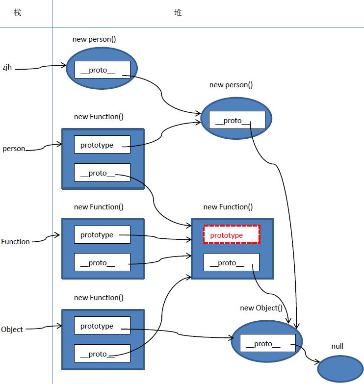
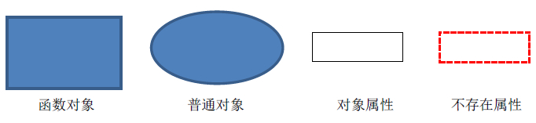
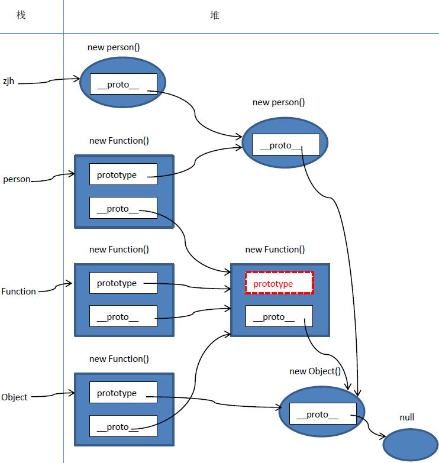
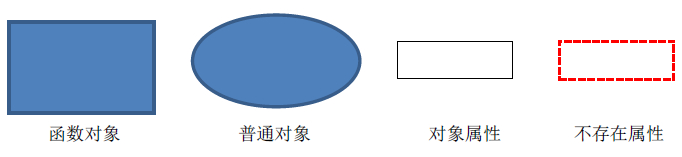
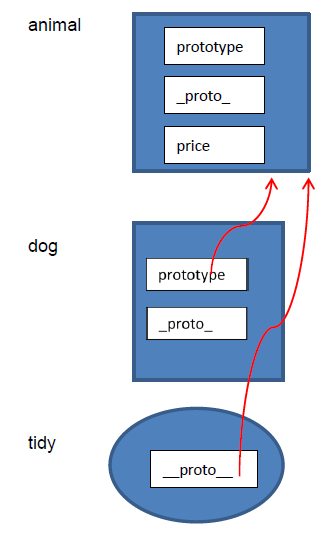
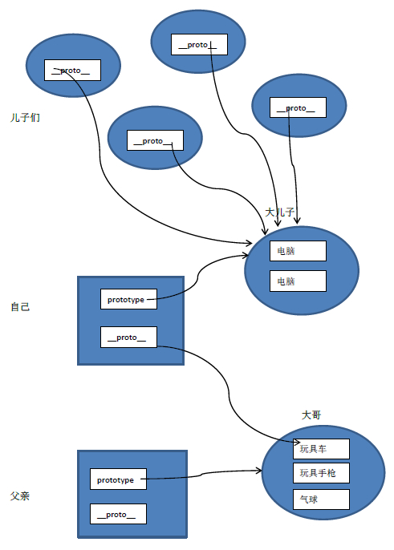
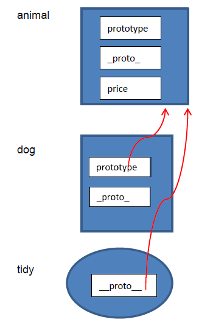
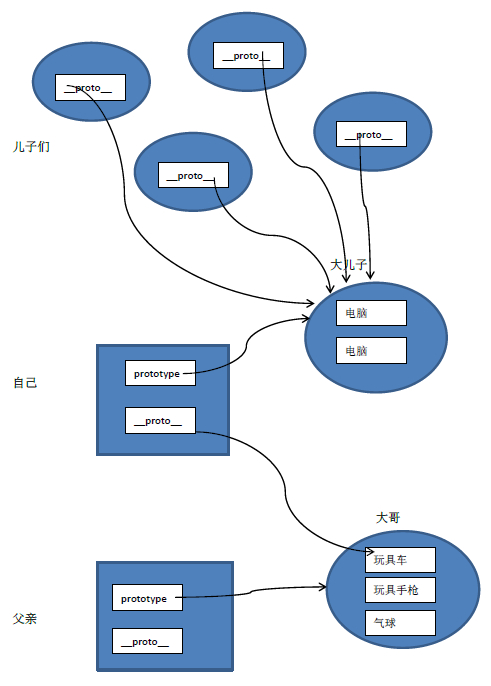

普通对象没有prototype,但有__proto__属性。
一. 普通对象与函数对象
JavaScript 中，万物皆对象！但对象也是有区别的。分为普通对象和函数对象，Object ，Function 是JS自带的函数对象。下面举例说明
function f1(){};
var f2 = function(){};
var f3 = new Function('str','console.log(str)');
var o3 = new f1();
var o1 = {};
var o2 =new Object();
console.log(typeof Object); //function
console.log(typeof Function); //function
console.log(typeof o1); //object
console.log(typeof o2); //object
console.log(typeof o3); //object
console.log(typeof f1); //function
console.log(typeof f2); //function
console.log(typeof f3); //function
在上面的例子中 o1 o2 o3 为普通对象，f1 f2 f3 为函数对象。怎么区分，其实很简单，凡是通过 new Function() 创建的对象都是函数对象，其他的都是普通对象。f1,f2,归根结底都是通过 new Function()的方式进行创建的。Function Object 也都是通过 New Function()创建的。
二. 原型对象
在JavaScript 中，每当定义一个对象（函数）时候，对象中都会包含一些预定义的属性。其中函数对象的一个属性就是原型对象 prototype。注：普通对象没有prototype,但有__proto__属性。
原型对象其实就是普通对象（Function.prototype除外,它是函数对象，但它很特殊，他没有prototype属性（前面说道函数对象都有prototype属性））。看下面的例子：
function f1(){};
console.log(f1.prototype) //f1{}
console.log(typeof f1. prototype) //Object
console.log(typeof Function.prototype) // Function，这个特殊
console.log(typeof Object.prototype) // Object
console.log(typeof Function.prototype.prototype) //undefined
从这句console.log(f1.prototype) //f1 {} 的输出就结果可以看出，f1.prototype就是f1的一个实例对象。就是在f1创建的时候,创建了一个它的实例对象并赋值给它的prototype，基本过程如下：
var temp = new f1();
f1. prototype = temp;
所以，Function.prototype为什么是函数对象就迎刃而解了，上文提到凡是new Function ()产生的对象都是函数对象，所以temp1是函数对象。
var temp1 = new Function ();
Function.prototype = temp1;
那原型对象是用来做什么的呢？主要作用是用于继承。举了例子：
var person = function(name){
this.name = name
};
person.prototype.getName = function(){
return this.name;
}
var zjh = new person(‘zhangjiahao’);
zjh.getName(); //zhangjiahao
从这个例子可以看出，通过给person.prototype设置了一个函数对象的属性，那有person实例（例中：zjh）出来的普通对象就继承了这个属性。具体是怎么实现的继承，就要讲到下面的原型链了。
三．原型链
JS在创建对象（不论是普通对象还是函数对象）的时候，都有一个叫做__proto__的内置属性，用于指向创建它的函数对象的原型对象prototype。以上面的例子为例：
console.log(zjh.__proto__ === person.prototype) //true
同样，person.prototype对象也有__proto__属性，它指向创建它的函数对象（Object）的prototype
console.log(person.prototype.__proto__ === Object.prototype) //true
继续，Object.prototype对象也有__proto__属性，但它比较特殊，为null
console.log(Object.prototype.__proto__) //null
我们把这个有__proto__串起来的直到Object.prototype.__proto__为null的链叫做原型链。如下图：
 四．内存结构图
为了更加深入和直观的进行理解，下面我们画一下上面的内存结构图：

画图约定：

疑点解释：
1.Object.__proto__ === Function.prototype // true
Object是函数对象，是通过new Function()创建，所以Object.__proto__指向Function.prototype。
2.Function.__proto__ === Function.prototype // true
Function 也是对象函数，也是通过new Function()创建，所以Function.__proto__指向Function.prototype。
自己是由自己创建的，好像不符合逻辑，但仔细想想，现实世界也有些类似，你是怎么来的，你妈生的，你妈怎么来的，你姥姥生的，……类人猿进化来的，那类人猿从哪来，一直追溯下去……，就是无，（NULL生万物）
正如《道德经》里所说“无，名天地之始”。
3.Function.prototype.__proto__ === Object.prototype //true
其实这一点我也有点困惑，不过也可以试着解释一下。
Function.prototype是个函数对象，理论上他的__proto__应该指向 Function.prototype，就是他自己，自己指向自己，没有意义。
JS一直强调万物皆对象，函数对象也是对象，给他认个祖宗，指向Object.prototype。Object.prototype.__proto__ === null，保证原型链能够正常结束。
五．constructor
原型对象prototype中都有个预定义的constructor属性，用来引用它的函数对象。这是一种循环引用
person.prototype.constructor === person //true
Function.prototype.constructor === Function //true
Object.prototype.constructor === Object //true
完善下上面的内存结构图：
四．内存结构图
为了更加深入和直观的进行理解，下面我们画一下上面的内存结构图：

画图约定：

疑点解释：
1.Object.__proto__ === Function.prototype // true
Object是函数对象，是通过new Function()创建，所以Object.__proto__指向Function.prototype。
2.Function.__proto__ === Function.prototype // true
Function 也是对象函数，也是通过new Function()创建，所以Function.__proto__指向Function.prototype。
自己是由自己创建的，好像不符合逻辑，但仔细想想，现实世界也有些类似，你是怎么来的，你妈生的，你妈怎么来的，你姥姥生的，……类人猿进化来的，那类人猿从哪来，一直追溯下去……，就是无，（NULL生万物）
正如《道德经》里所说“无，名天地之始”。
3.Function.prototype.__proto__ === Object.prototype //true
其实这一点我也有点困惑，不过也可以试着解释一下。
Function.prototype是个函数对象，理论上他的__proto__应该指向 Function.prototype，就是他自己，自己指向自己，没有意义。
JS一直强调万物皆对象，函数对象也是对象，给他认个祖宗，指向Object.prototype。Object.prototype.__proto__ === null，保证原型链能够正常结束。
五．constructor
原型对象prototype中都有个预定义的constructor属性，用来引用它的函数对象。这是一种循环引用
person.prototype.constructor === person //true
Function.prototype.constructor === Function //true
Object.prototype.constructor === Object //true
完善下上面的内存结构图：
 有两点需要注意：
（1）注意Object.constructor===Function；//true 本身Object就是Function函数构造出来的
（2）如何查找一个对象的constructor，就是在该对象的原型链上寻找碰到的第一个constructor属性所指向的对象
六．总结
1.原型和原型链是JS实现继承的一种模型。
2.原型链的形成是真正是靠__proto__ 而非prototype
要深入理解这句话，我们再举个例子，看看前面你真的理解了吗？
var animal = function(){};
var dog = function(){};
animal.price = 2000;//
dog.prototype = animal;
var tidy = new dog();
console.log(dog.price) //undefined
console.log(tidy.price) // 2000
为什么呢？画一下内存图：

这说明什么问题呢，执行dog.price的时候，发现没有price这个属性，虽然prototype指向的animal有这个属性，但它并没有去沿着这个“链”去寻找。同样，执行tidy.price的时候，也没有这个属性，但是__proto__指向了animal，它会沿着这个链去寻找，animal中有price属性，所以tidy.price输出2000。由此得出，原型链的真正形成是靠的__proro__，而不是prototype。
因此，如果在这样指定dog.__proto__ = animal。那dog.price = 2000。
最后打个比喻，虽然不是很确切，但可能对原型的理解有些帮助。

父亲（函数对象），先生了一个大儿子（prototype），也就是你大哥，父亲给你大哥买了好多的玩具，当你出生的时候，你们之间的亲情纽带（__proto__）会让你自然而然的拥有了你大哥的玩具。同样，你也先生个大儿子，又给他买了好多的玩具，当你再生儿子的时候，你的小儿子会自然拥有你大儿子的所有玩具。至于他们会不会打架，这不是我们的事了。
所以说，你是从你大哥那继承的，印证了那句“长兄如父”啊！
有两点需要注意：
（1）注意Object.constructor===Function；//true 本身Object就是Function函数构造出来的
（2）如何查找一个对象的constructor，就是在该对象的原型链上寻找碰到的第一个constructor属性所指向的对象
六．总结
1.原型和原型链是JS实现继承的一种模型。
2.原型链的形成是真正是靠__proto__ 而非prototype
要深入理解这句话，我们再举个例子，看看前面你真的理解了吗？
var animal = function(){};
var dog = function(){};
animal.price = 2000;//
dog.prototype = animal;
var tidy = new dog();
console.log(dog.price) //undefined
console.log(tidy.price) // 2000
为什么呢？画一下内存图：

这说明什么问题呢，执行dog.price的时候，发现没有price这个属性，虽然prototype指向的animal有这个属性，但它并没有去沿着这个“链”去寻找。同样，执行tidy.price的时候，也没有这个属性，但是__proto__指向了animal，它会沿着这个链去寻找，animal中有price属性，所以tidy.price输出2000。由此得出，原型链的真正形成是靠的__proro__，而不是prototype。
因此，如果在这样指定dog.__proto__ = animal。那dog.price = 2000。
最后打个比喻，虽然不是很确切，但可能对原型的理解有些帮助。

父亲（函数对象），先生了一个大儿子（prototype），也就是你大哥，父亲给你大哥买了好多的玩具，当你出生的时候，你们之间的亲情纽带（__proto__）会让你自然而然的拥有了你大哥的玩具。同样，你也先生个大儿子，又给他买了好多的玩具，当你再生儿子的时候，你的小儿子会自然拥有你大儿子的所有玩具。至于他们会不会打架，这不是我们的事了。
所以说，你是从你大哥那继承的，印证了那句“长兄如父”啊！